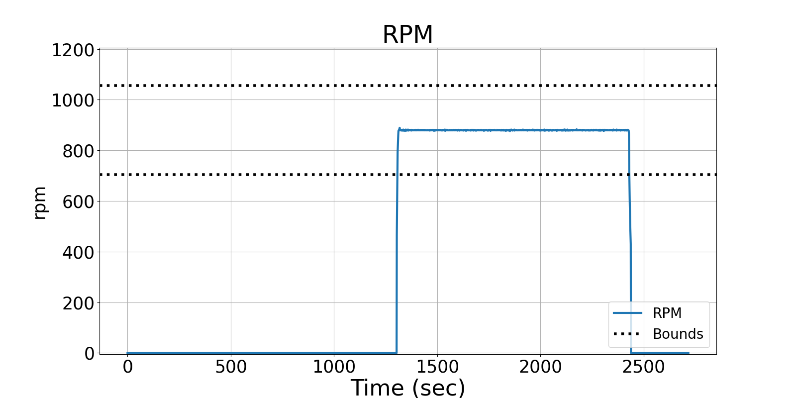
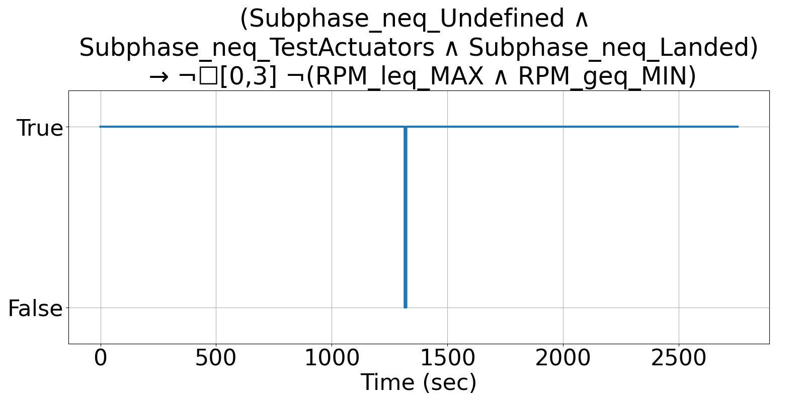

Integrating Runtime Verification into an
Automated UAS Traffic Management System
Matthew Cauwels, Abigail Hammer, Benjamin Hertz, Phillip H. Jones, Kristin Y. Rozier
This webpage contains supplementary specifications for "Integrating Runtime Verification into an
Automated UAS Traffic Management System" by M. Cauwels, A. Hammer, B. Hertz, P. H. Jones, and K. Y. Rozier
OR_UAS_1
Specification Description
The motor RPM will be bounded by RPM_OR_MIN and RPM_OR_MAX while Subphase is not equal to Landed, Test Actuator, or <undefined>, but if it exceeds it, allow 3 timesteps to recover.
Signals Required
RPM, Subphase
Boolean Conversion of Signals to Atomic Inputs
RPM_leq_MAX: RPM ≤ RPM_OR_MAX
RPM_geq_MIN: RPM ≥ RPM_OR_MIN
Subphase_neq_Undefined: Subphase ≠ <undefined>
Subphase_neq_TestActuators: Subphase ≠ "Test Actuators"
Subphase_neq_Landed: Subphase ≠ "Landed"MLTL Specification
(Subphase_neq_Undefined ∧ Subphase_neq_TestActuators ∧ Subphase_neq_Landed) → ¬☐[0,3] ¬(RPM_leq_MAX ∧ RPM_geq_MIN)
Fault Explanation
RPM present during when phase is Landing, Test Actuators, or <undefined>
Additional Notes
RPM_OR_MAX and RPM_OR_MIN based on 20% of nominal RPM (880) would be 1056 and 704 RPM respectively.
Figures

